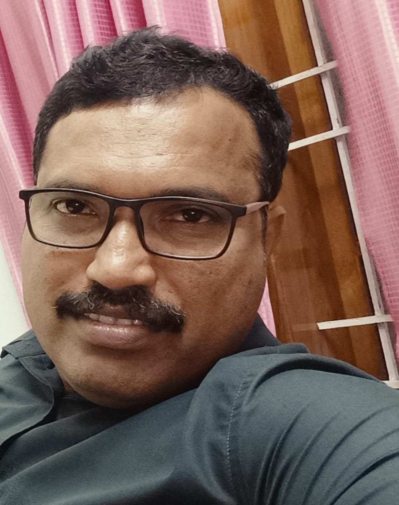

I am a retired Military person from Indian Army. I retired from service on 30 Jun 2022.
I worked there as a GIS professional under Military Survey. I have got Opportunity to work
with various types of GIS software such as Bently's Microstation, ArcGIS, Q GIS etc. I am
also expert in Satallite Image Analysing and Romote sencing technologies. I also get training
in various types of GIS/Survey equipment such as Total station, GPS, Digital level, GPR,
etc. After retirement I am looking forward to do some thing different using technologies for
betterment of society and satisfaction of mind.
Education
- MCA
- B.Sc.(Mathematics)
- Pre-Degree/12th (Science)
- SSLC/X-th
Work Experience
Database Administrator 08/2019 - 06/2022 Centre For Automated Military Survey, New Delhi, India
Established a New GIS interface with database connection using Q-GIS and PG Admin. Customize Q-GIS for
Organizational purposes. Establish a self-managed data access system for various tasks over the Network (LAN).
Developed an Interface for Searching and copying many Digital maps from a repository as per user requirements.
Implement SOP (Standard Operating Procedure) for GIS data validation. I have work experience in different map
projections, data, and coordinate systems. Create 3D-Fly projects in Terra Explorer (flood simulator). Satellite
Image Analysis.
R&D And Administrator 03/2015-08/2019 501 Field Survey Engineer Group, Dehradun, India
Success in Creating customized schema in Bentley Geo-special Administrator. Creates Slandered Operating Procedures
for GIS Creation and map printing (Map Manager & Map Organizer) using Bentley Map V8i. Working experience in QGIS and
Arch GIS. Also handle Mobile Mapping devices, GPR, GPS, Total Station, and digital Level. Drone data processing.
Administrative duties and manpower management.
Database Administrator 11/2011-03/2015 Army Digital Mapping Centre, Bangalore, India
More than 03 years of experience in Cartographic Data management. Provide Technical assistance for developing a new
environment to store and retrieve different types of Digital Map Data. (Raster, Vector, GIS). Also, provide support for
resolving issues in different GIS and CAD Software. Assessed organizational needs and modify existing databases.
Digital Cartographer 01/2005-11/2011
Centre For Automated Military Survey, New Delhi, India
Working experience in Map Digitization, Image Analyzing, and Remote sensing. Cartographic symbolization and creation of
GIS data from row vector data Knowledge in Map printing technology using CYMK pdf. Network Administrator in Linux-based LAN.
Successfully completed Certificate in Computing (CIC), PGDCA, and MCA from IGNOU.
Military And Cartographic Training 09/2003 - 12/2004 Ministry Of Defence, Uttarakhand-Delhi, India
- Successfully completed Basic and Advance Military Training for 9 months from Bengal Engineering Group & Centre (BEG & C)
Roorkee, Uttarakhand.
- Successfully completed Field Survey Training for 6 months from 501 Field Survey Engineer Group, Dehradun, Uttarakhand.
Got Training in plane table survey and leveling using various types of Survey. Equipment like Total Station, Digital Level,
Theodolite, and GPS.
- Successfully completed Digital Cartographic training for 6 months from DIGIT (Defense Institute for Geospatial Information and
Training) and Remote sense training from DIAPC, NEW DELHI
Key Skills
Ability to work collaboratively as a part of a team. Deep understanding of software, hardware,
networks, databases, and other IT systems. Ability to troubleshoot and resolve technical issues effectively.
Awards and Achievements
- Best performer Awards in 2009, 2018 and 2018 for Digital and Technical works
- Succussfully completed Certificate in Computing, Post Graduate Diploma in Computer Applications and Master of Computer Application whike serving in Military
Hobbies
- Football
- Cricket
- Movies and Music
Contact details
Tel: +91 8848 73 5396
Email: vijeshv.in@gmail.com
Address:
Vijesh V
Varadam
Thamarakulam
Kerala
India - 690530
Copyright © 2024 YuVa Group of Companies. All Rights Reserved.